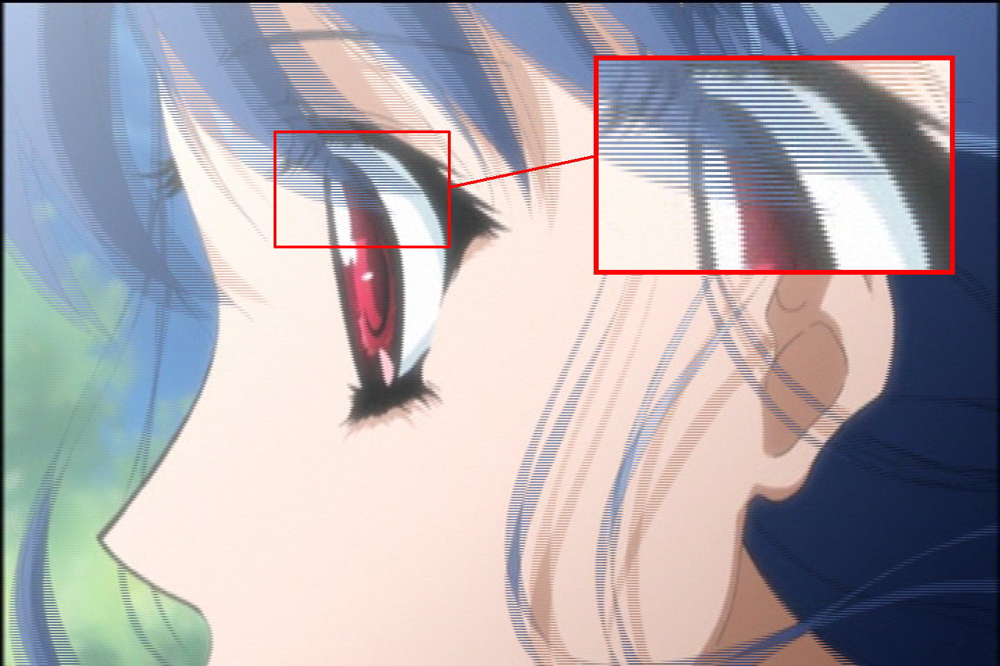

Field-Based Video
When working with video content, especially from older sources like DVDs, you'll often encounter what's known as "field-based" video. This guide will help you understand what field-based video is, how to identify it, and different methods used in practice to handle these types of sources.
Combed frame

What is a Video?
At its most basic, a video is a series of pictures (called frames) displayed in sequence at specific intervals. The rate at which these frames are displayed is known as the framerate, typically measured in frames per second (fps). When you play a video on your computer, you're usually seeing what's called "frame-based" or "progressive" footage. Each frame is a complete picture on its own, and there's nothing special about how it's stored or displayed.
However, not all footage is this straightforward. Some video, particularly from older sources or certain broadcast formats, is stored in what's called a "field-based" format.
Fields and Frames
There are a handful of key differences between these two storage formats.
Frame-Based (Progressive) Video
Frame-based footage, also known as progressive video, is straightforward:
- Each frame is a complete, self-contained picture
- All rows of pixels are captured at the same moment in time
- The frames are displayed sequentially, one after another
Here's a visualization of sequential frames in progressive video:
Field-Based (Interlaced) Video
Field-based video works differently:
- Each frame is divided into two fields
- One field contains the even-numbered rows of pixels (top field), and the other field contains the odd-numbered rows (bottom field)
- Each field can capture a different moment in time
Field Order
Field orders can change depending on how the footage was shot. The two common field orders are:
- Top Field First (TFF): The top field comes from an earlier point in time than the bottom field
- Bottom Field First (BFF): The bottom field comes from an earlier point in time than the top field
This is important to know when working with any field-based footage, as using the wrong field order will result in jerky motion and visual artifacts.
This guide will explain concepts assuming Top Field First.
This format was originally developed for CRT televisions, which could only draw half the lines of a frame at once. By alternating between the even and odd lines, they could display video at a higher perceived framerate while using less bandwidth.
Types of Field-Based Footage
Know what you're working with
It is vitally important to recognize which type of field-based video you're working with before you take any other action, as each requires a completely different approach. This information can NOT be determined solely from MediaInfo alone. You must visually inspect multiple consecutive frames manually to observe how the fields interact over time to identify whether the video is interlaced or telecined.
There are two main types of field-based footage:
- Interlaced Footage: Where each field represents a complete picture at a different point in time
- Telecined Footage: Where fields are used to convert between different framerates (like 23.976 fps to 29.97 fps)
Interlaced footage
In interlaced footage, each field captures a unique moment in time. Unlike progressive video where each frame represents a single instant, interlaced video interleaves two different temporal samples into a single frame:
- The top field contains even-numbered rows from one moment
- The bottom field contains odd-numbered rows from the next moment
- Each field has half the vertical resolution of a full frame
For any given frame:
When displayed on a CRT monitor, this temporal interleaving appeared smooth because CRTs draw the image line-by-line, from top to bottom. Each field would be displayed sequentially, with the phosphors from the previous field naturally fading before the next field was drawn. Modern displays work entirely differently however, and will simply render full frames at a time, making the interlacing visible.
Telecined footage
Telecined footage is more complex. It's a process used to convert film (typically 23.976fps) to broadcast formats (typically 29.97fps) by duplicating and blending fields in a specific pattern.
This conversion is necessary because film (23.976 fps) and broadcast video (29.97 fps) have different framerates, with a ratio of 4:5 frames: $$ \frac{23.976}{29.97} = \frac{4}{5} $$ The most common pattern is 3:2 pulldown (also called 2:3 pulldown), which converts 23.976fps film to 29.97fps video by duplicating and rearranging fields from 4 film frames (8 fields) to create 5 frames for broadcast (10 fields).
This creates a repeating pattern of 2-3-2-3 field duplicates, where:
- Frame A is shown for 2 fields
- Frame B is shown for 3 fields
- Frame C is shown for 2 fields
- Frame D is shown for 3 fields
The combed frames occur where fields from different source frames are interlaced together (B/C and C/D frames). These hybrid frames contain fields from two different moments in time, creating the "combing" artifact. As this method follows a set pattern to achieve interlaced video, that means it's reversible. This process is called "inverse telecine" (IVTC).
The key difference between telecined and interlaced footage is that with telecining, the fields originate from progressive film frames, meaning we can reconstruct the original frames by identifying and reversing the telecine pattern. With interlaced footage, the fields were captured at different moments in time, so there is no "original" progressive frame to recover.
Cycles and Pattern Breaking
Variable Framerate Footage
Filtering
Now that you understand the different types of field-based content, you will need to filter accordingly.